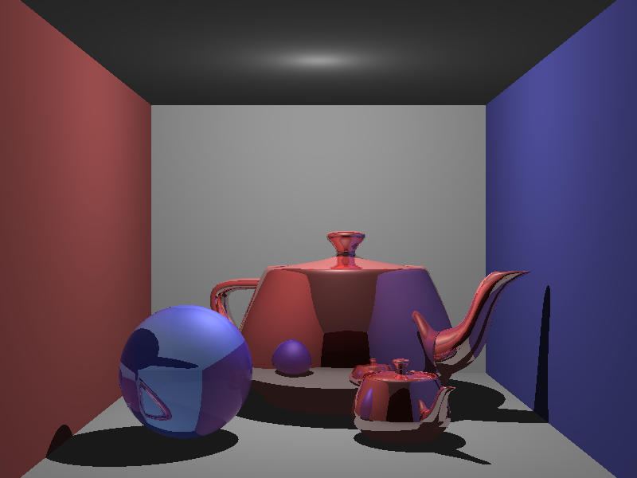
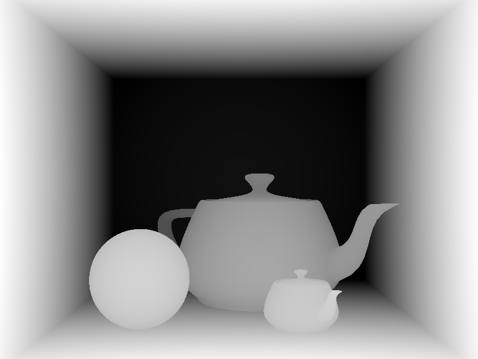
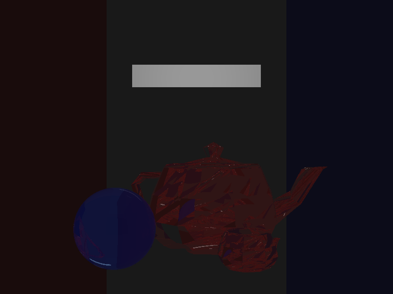

CS6620 - Ray Tracing for Graphics
Project 5 - Triangle Meshes
Results
Rendered in way too long with seven threads plus the main thread with 4 bounces.
(I currently split the image into sections for each thread.
I will switch to pixel based threads and see if this fixes it.)
|  |
 |
| Rendered Image |
Normalized Z-Buffer |
Machine Specs
Running Windows 10 on a Bootcamped MacBook Pro
| Processor |
Intel Core i7 2.50 GHz |
| RAM |
16GB 1600 MHz DDR3 |
| Graphics Card |
Intel Iris Pro 1536 MB |
Project Stumbling Blocks

I got the following image because I was not checking for t values less than the current hInfo.z
and I was calculating my triangle area in the wrong order.